Здесь всё, что я предлагаю изменить: в одной вкладке — интерфейс сайта, в другой — сам бренд. В каждом пункте показано, как сейчас и как предлагаю. Отметьте решение — я внесу в рабочую версию только то, что вы согласуете.
1. Отметьте каждый пункт«Да» — делаем, «Нет» — не делаем, «Обсудить» — есть вопросы. Можно оставить комментарий.
2. Отметки сохраняютсяв этом браузере на этом компьютере: можно закрыть страницу и вернуться позже.
3. Пришлите мне решенияКнопка «Скопировать решения» внизу соберёт список. Вставьте его в чат.
Сайт уже работает как продукт. Главное, что мешает, — у похожих вещей разное устройство, а нужное приходится искать по разделам. Пункты ниже про порядок и удобство, а не про новый дизайн.
Файлы и скачивание
И1
Единая карточка файла — вторая версия
Переделала по вашим замечаниям. В карточке только превью и название. Язык «Рус / Eng» — рядом с названием и только там, где есть английская версия. Белый логотип — отдельной карточкой, один раз, на фирменном синем.
Новая версия по вашим комментариямОбъём: средний
Что убрала из первой версии
Кружки выбора фона в превью«только RU»Пояснения «На тёмном фоне скачается белая»Белый логотип на двух фонахИмена файловВыпадающее меню
Предлагаю (наведите на превью — появятся форматы; можно скачать)
Одинаково для логотипов КРДВ, ДО, знаков режимов, «Сделано в…», Гектара, МА 2030 и ИНТЦ. Как именно скачивать — три варианта в И2.
И2
Как скачивать — три варианта на выбор
Без выпадающего меню и без имён файлов. Подсказка, какой формат для чего, появляется при наведении на формат и одной строкой под блоком — не в каждой карточке.
Новая версия по вашим комментариямОбъём: небольшойНапишите в комментарии: А, Б или В
Самый тихий вариант: форматы — короткие ссылки под названием, как на сайтах Linear и Vercel.
SVG — для сайтов и вёрстки · PNG — прозрачный фон, для документов и соцсетей · PDF — для печати, в CMYK
И3
Страница «Все файлы»
Отдельный раздел в конце меню: все файлы брендбука с фильтрами. Отмечаете нужное — скачиваете одним архивом. Архивы на Яндекс.Диске больше не нужны.
Объём: большойНе кнопка в меню — её вы отклонилиШрифтов в списке нет — лицензия
Сейчас
Логотипы Яндекс.Диск ↗
Логотипы ДО Яндекс.Диск ↗
Знаки режимов Яндекс.Диск ↗
Визитки, бланки, грамоты… Яндекс.Диск ↗
Архивы живут отдельно от сайта: мы не видим, что в них лежит, и обновить их отсюда нельзя. Например, новые PDF в CMYK есть на сайте, а в архивах, скорее всего, старые.
Предлагаю (фильтры работают)
3 файла · форматы: SVG, PNG, PDF
В меню — пункт «Все файлы» в блоке «Ресурсы», на «Обзоре» — ссылка вместо «Материалов для скачивания». Ссылки на файлы прямые: можно отправить подрядчику ссылку на один логотип.
Цвет
И4
Цвета: копирование по клику и таблица «что на чём читается»
Нажал на HEX — код скопирован. Под палитрой — таблица: какой текст можно ставить на каждый фирменный цвет. Её считает сам сайт по стандарту доступности WCAG.
Объём: небольшойСейчас правил сочетаний нет совсем
Сейчас
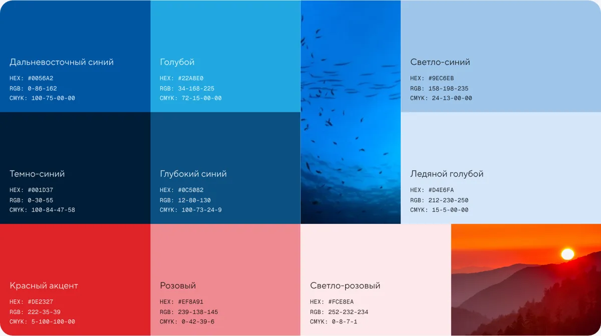
Коды видно, но копировать их приходится выделением. Непонятно, можно ли ставить белый текст на «Голубой» или «Розовый».
Предлагаю (нажмите на код)
Дальневосточный синий
Голубой
Светло-розовый
Верхний ряд — белый текст, нижний — тёмно-синий✓ любой текстКр. только крупный (от 24 px)✕ нельзя
Видно, например, что белый текст на «Голубом» и «Розовом» не читается — там нужен тёмно-синий, а на «Красном» тёмно-синий годится только для крупных заголовков. Наведите на клетку — покажет точное значение.
Чтение и навигация
И5
Блок «Коротко» в начале каждого раздела
Три–пять главных правил раздела с отметками «можно / нельзя» сразу под вступлением. Большинство людей приходит за одним ответом и не читает раздел целиком.
Объём: средний — в основном текстыТексты пришлю на согласование
Сейчас
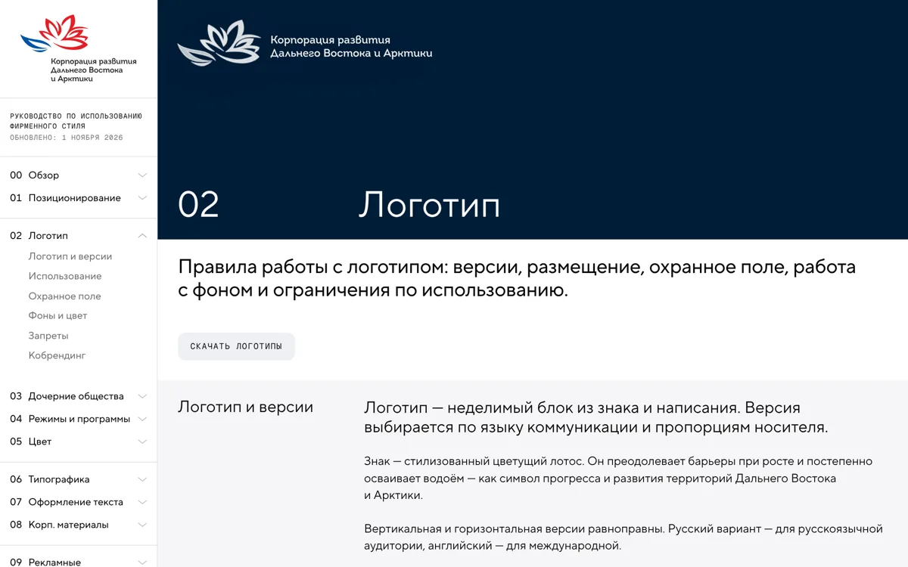
Правила раздела «Логотип» разбросаны по шести подразделам. Чтобы узнать, можно ли ставить логотип на фото, нужно пролистать до «Фонов».
Предлагаю: «Логотип», пример
Коротко
✓Русская версия — для России, английская — для международной аудитории.
✓Вокруг логотипа — охранное поле: высота левого лепестка.
✓На фото и цветном фоне — белая версия или плашка.
✕Знак без надписи не используем.
✕Не меняем цвета, пропорции и подпись.
Каждый пункт — ссылка на свой подраздел. Правила взяты из текущего текста раздела, новых нет.
И6
Меню группами с подписями — вторая версия
Разделители в меню уже есть, но стоят через каждые три пункта, без смысла. Предлагаю пять подписанных групп: Основа, Элементы, Семейство брендов, Носители, Ресурсы.
Новая версия по вашим комментариямОбъём: небольшойАдреса страниц не меняются, старые ссылки работают
Сейчас
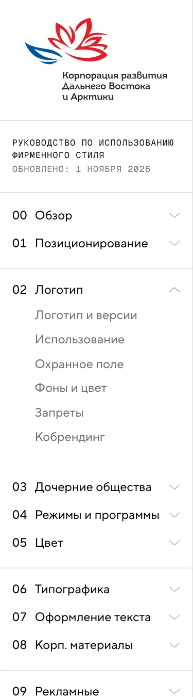
Предлагаю
Основа
00Обзор
01Позиционирование
Элементы
02Логотип
03Цвет
—Графика
04Типографика
05Оформление текста
06Фотостиль
Семейство брендов
07Дочерние общества
08Режимы и программы
09Товарный знак
Носители
10Корп. материалы
11Рекламные
12Дизайн соцсетей
13Мерч
14Контакты
По вашим комментариям: без «Голоса и текста», «Кобрендинг» остаётся в «Логотипе», без «Всех файлов». «Оформление текста» — в «Элементах» после «Типографики». «Графика» появится, только если согласуете Б2. «Контакты» — отдельно в конце, без подписи группы.
Движение и обложки
И7
Порядок в анимациях
Одно правило: движение объясняет, а не украшает. Карточка приподнимается при наведении, только если на неё можно нажать. Живое «сияние» оставляем на обложках, внутри страниц — статичный градиент.
Объём: небольшойСайт станет легче на слабых ноутбуках
Сейчас (наведите на карточки)
Пара логотиповПриподнимается, но нажать не на что.
Брендбук «Гектара» ↗Приподнимается и ведёт по ссылке.
Сейчас приподнимаются почти все карточки: пары логотипов, ДО, охранное поле, примеры текста. Человек ждёт, что они откроются, — и ничего не происходит.
Анимации, которые показывают свойство бренда: построение охранного поля, сборка билборда, ремувки, стикеры на ноутбуке, лента соцсетей, логотип в соцсетях.
Сделать тише
Живое сияние в принципах, превью шрифтов, слогане — только на обложках. Подъём карточек — только у кликабельных.
Проверить
Покачивание лепестков на обложке «Режимов» и иконки за курсором — оставить, если не мешают читать.
И8
Обложки по одному принципу
Обложки вы делаете сами — здесь только наблюдение и правило. Сейчас обложки говорят на пяти разных языках. Плитки «Обзора» будут смотреться сильнее, если выбрать один язык.
Решение за вамиОт меня — сетка-проверка всех 15 обложек
Сейчас: видео, 3D, фото, лепестки, сияние
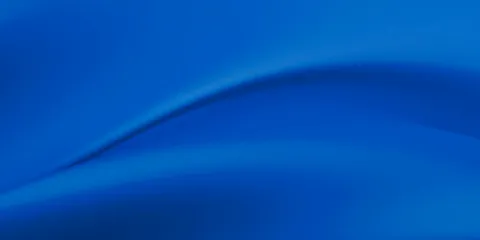
Логотип · видео
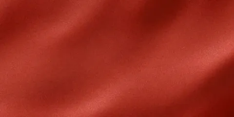
ДО · видео
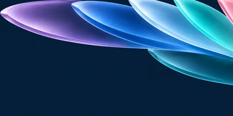
Режимы · лепесткиТипографика · видеоТекст · видеоКорп. · видео
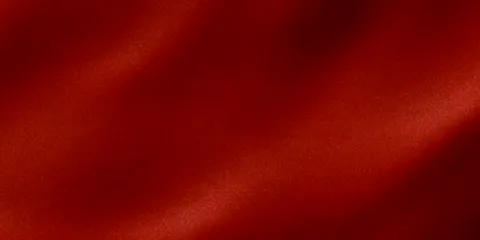
Реклама · видео
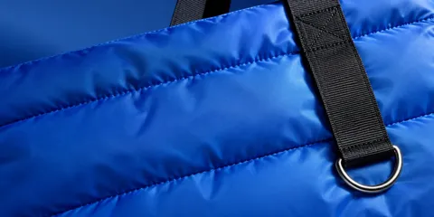
Мерч · фото
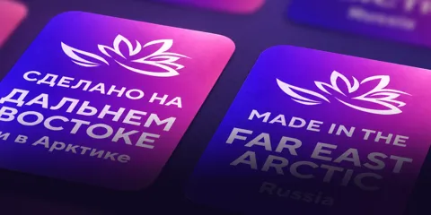
Тов. знак · 3DФотостиль · видео
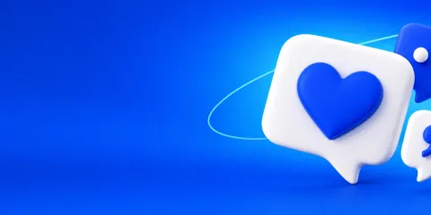
Соцсети · 3D
Предлагаю: правило из трёх пунктов
Один фон. Например, тёмно-синий градиент «Сияние» (см. Б4), у всех разделов одинаковый.
Один объект. Стеклянный 3D-предмет — смысл раздела. Ближе всего к этому уже «Режимы», «Товарный знак» и «Соцсети».
Одно место. Объект справа, заголовок слева — у плиток «Обзора» тогда выравниваются ритм и вес.
уже близкоуже близкоуже близко
Надёжность
И9
Полная проверка на телефоне
Сложные блоки мы проверяли в основном на компьютере. Предлагаю пройти весь сайт на ширине телефона, найти неудобные места и поправить. В дизайн не вмешиваюсь, только чиню.
Объём: среднийВидимых изменений на компьютере нет
Под подозрением
Ноутбук со стикерами перетаскивание пальцем
Ремувки прогрев пальцем
Листалки презентаций и билбордов свайп
Карточки ДО в один ряд мелкий масштаб
Таблица цветов режимов плитки 3×3
Портал: кадрирование фото щипок
Что получите
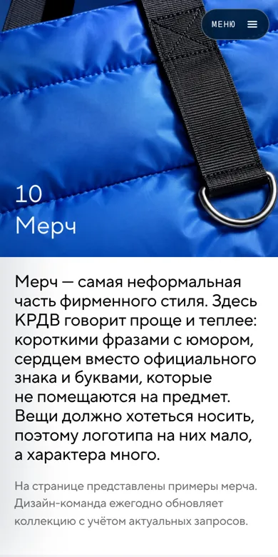
Список найденного и исправленного. Отдельно — то, что лучше решить дизайном (если найдётся).
И10
«Что нового» — список изменений
Короткий журнал в «Контактах»: что и когда поменялось в брендбуке. Коллеге или подрядчику сразу видно, нужно ли перекачать файлы. Это не дата «Обновлено» в меню, которую вы отклонили.
Объём: небольшойНеобязательно
Сейчас
Только строка «Дата последнего обновления руководства: 01.11.2026» в «Контактах». Что именно изменилось — неизвестно.
Предлагаю
Печатные PDF всех логотипов и знаков — в CMYK, чёрный 0/0/0/100перекачать
Белые версии логотипа КРДВ
Наружная реклама СПВ: билборды и экраны
Новый раздел «Дизайн соцсетей»
Дальше — вкладка «Бренд»
Там структура, новый раздел «Графика», знаки режимов, голос бренда и фотостиль.
Взгляд арт-директора: в брендбуке есть логотип, цвет и шрифт, но нет графической системы — того, из чего собираются макеты. Каждый раздел придумывает её заново. Ниже — как это собрать, и что поправить в структуре и фотостиле.
Структура
Б1
Порядок разделов: от смысла к носителям
Сейчас разделы идут в порядке появления. Предлагаю классическую логику сильных гайдов: основа → элементы → семейство брендов → носители → ресурсы.
Обновлено по решению И6Объём: среднийАдреса страниц сохраняются, старые ссылки работают
Сейчас (цвет — куда переедет)
00Обзор
01Позиционирование
02Логотип
03Дочерние общества
04Режимы и программыпосреди базовых
05Цвет
06Типографика
07Оформление текста
08Корп. материалы
09Рекламные
10Мерч
11Товарный знак
12Фотостильоторван от элементов
13Дизайн соцсетей
14Контакты
Предлагаю
Основа — кто мы и как говорим
00Обзор
01Позиционирование
Элементы — из чего собираем
02Логотипс кобрендингом
03Цвет
—Графикановый · Б2
04Типографика
05Оформление текста
06Фотостильвыше
Семейство брендов
07Дочерние общества
08Режимы и программыниже
09Товарный знаквыше
Носители — как применяем
10Корп. материалы
11Рекламные
12Дизайн соцсетей
13Мерч
В конце
14Контакты
Почему так. Человек сначала понимает, что за бренд, потом получает «кубики», потом видит, как из них собраны носители. Так устроены гайды Airbnb, Spotify, Google.
Уже учтено ваше решение по И6: без «Голоса и текста» и отдельного «Кобрендинга». Если «Графику» (Б2) не согласуете — порядок тот же, просто без неё.
Новый раздел «Графика»
Б2
Раздел «Графика» — главное, чего не хватает
Сейчас у мерча свой язык (сердце, буквы), у рекламы СПВ — свой (арки, плашки), у соцсетей — свой, обложки — каждая своя. Раздел «Графика» даёт общий набор «кубиков». Пункты Б3–Б8 — его части: их можно согласовать по отдельности.
—Принципы движения: как появляются лепесток и сияние в видео и сторис
—«Нет хорошего фото» — какой графикой заменить
Б3
Лепесток — главный графический модуль
Главная находка уже лежит на сайте — обложка «Режимов». Там лепестки лотоса в цветах режимов. Это готовая метафора: КРДВ — цветок, режимы и программы — его лепестки. Предлагаю сделать лепесток формой, из которой строится вся графика.
Объём: большойФорму лепестка ниже нарисовала я — это эскиз, точное построение делают дизайнеры по знаку
Сейчас: лепестки живут только на одной обложке
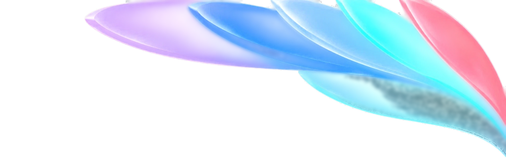
Знак — «лотос, который растёт и осваивает водоём». Лепесток — его самая узнаваемая часть, и он уже есть в каждом логотипе ДО и знаке «Сделано в…».
Предлагаю: четыре роли лепестка
Построение
Форма на модульной сетке, от охранного поля логотипа.
Окно для фото
Фото в лепестке вместо скруглённых плашек.
ИТОГИ 2026
Суперграфика
Огромный лепесток уходит за край: обложки, стенды, сцена.
12 ТОР
3 300 резидентов
140 000 гектаров
цифры условные
Указатель
Маркер в списках, инфографике, на картах.
Б4
Сияние — фирменный градиент по правилам
Градиент «северное сияние» уже стал фирменным: он есть в слогане, превью шрифтов, принципах, на портале, в обложке. Но везде он свой. Предлагаю закрепить четыре палитры и правила.
Объём: среднийНазвания палитр — предложение
Сейчас: каждый раз новый
Слоган «Позиционирования», принцип «Надёжно», фон портала. Разные основы, разная насыщенность, правил нет.
Предлагаю: 4 палитры из фирменных цветов
Океан
Север
Рассвет
Закат
Где можноОбложки, слайды-разделители, соцсети, сцена, мерч.
Где нельзяДеловые документы, бланки, таблицы, мелкий текст.
Как строитсяТёмная основа и 2–3 мягких пятна. Светлое — справа внизу, чтобы белый заголовок слева читался.
Б5
Пиктограммы и 3D-иллюстрации — в общую систему
И пиктограммы КРДВ, и объёмные иконки уже есть, но живут в «Соцсетях» и на портале. Предлагаю перенести их в «Графику» с правилами. Тогда новые иконки дизайнеров будут «из той же студии».
Объём: среднийПравила 3D нужно сверить с дизайнерами
Сейчас: материалы есть, правил нет
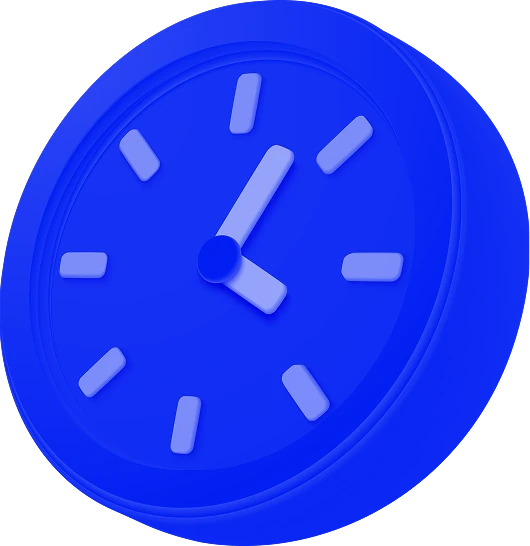
3D-иконки — только на портале, пиктограммы — только в «Соцсетях». Цвета пиктограмм (#1230F2, #FD3D37) — из соцсетей, а не из основной палитры.
Предлагаю
ПиктограммыОдна сетка и толщина линии, круглая подложка. Цвета — из палитры «Цвета», плюс отдельное правило для соцсетей.
3D-иллюстрацииМатериал (стекло или глянец), свет сверху слева, мягкая тень, ракурс ¾. Фон — тёмный или «Сияние».
Когда чтоПиктограмма — навигация и списки. 3D — обложки и главные карточки. Не смешивать в одном блоке.
БиблиотекаВсе иконки — в «Графике», сгруппированы по смыслу, со скачиванием.
Б6
Подпись «КРДВ. + фраза» — фирменный приём, а не только мерч
В мерче нашёлся сильный словесно-визуальный ход: «КРДВ. Заряжены на развитие», «КРДВ. Когда решения двигают вперёд». Это можно сделать фирменной подписью для соцсетей, наружки, заставок и презентаций.
Объём: небольшойНужно согласовать тон фраз (см. Б9)
Сейчас: только на предметах
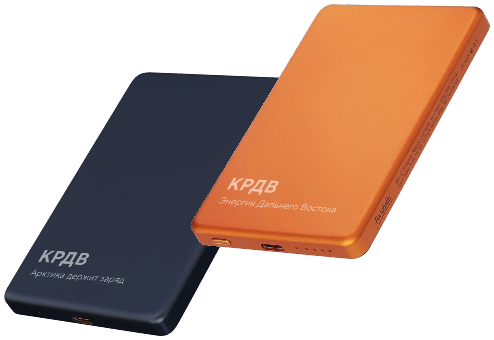
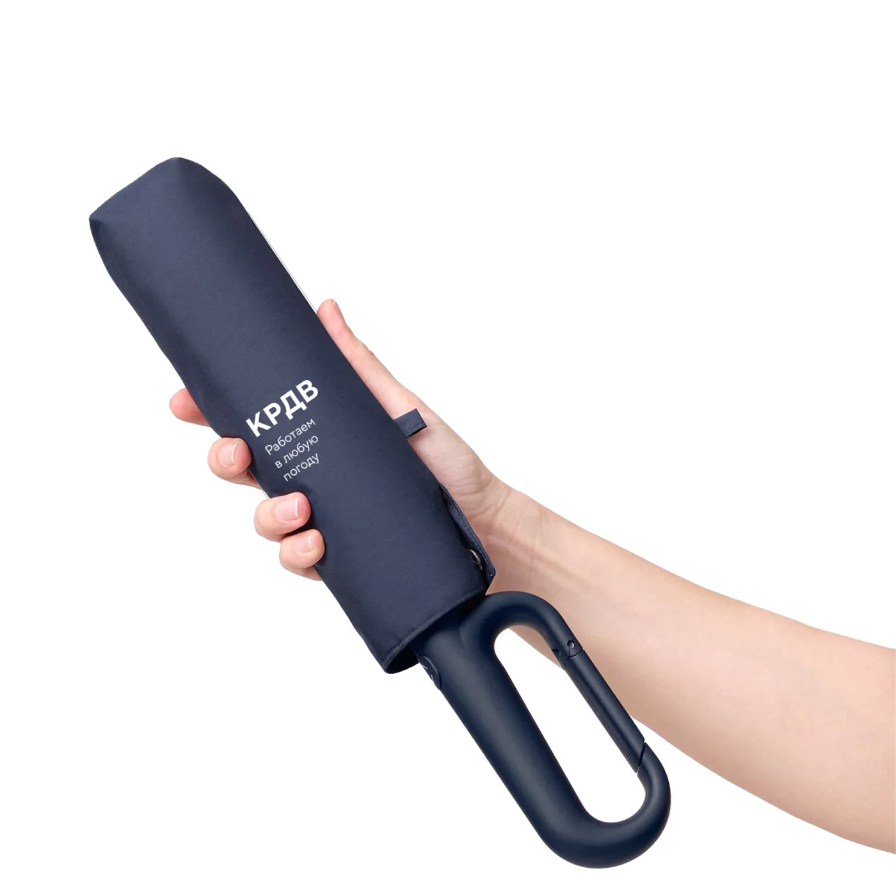
Предлагаю: подпись на любых носителях
Пост, последняя карточкаКРДВ. Заряжены на развитие
Финальный слайдКРДВ. Когда решения двигают вперёд
Подпись под билбордомКРДВ. Работаем в любую погоду
Правило: «КРДВ.» жирным, фраза — обычным, всегда в две строки. Фраза короткая, с характером, без канцелярита.
Б7
Сетка и «как собирается макет» — система на носителях
Одно правило полей для всех форматов: модуль = 1/18 стороны. В соцсетях он уже работает — от него отсчитывается логотип. В конце «Графики» — блок «Как собирается макет», как у билборда СПВ, для 3–4 типовых носителей.
Объём: большойМакеты ниже — эскизы направления, не готовые шаблоны
Как может выглядеть: лепесток + сияние + подпись + логотип
СЕВЕРНЫЙ МОРСКОЙ ПУТЬ
Пост 1080 × 1080: фото в лепестке
ИТОГИ 2026 ГОДА
Обложка презентации: знак как суперграфика
КРДВ. Ближе к будущему
Роллап 800 × 1800
Что даёт. Любой носитель узнаётся без логотипа — по лепестку и сиянию. Как сердце в мерче, только для всего бренда.
Что войдёт в раздел. Сетки для поста, сторис, слайда 16:9, роллапа и А4; поля; где ставить логотип и подпись.
Знаки префрежимов
Б8
Знаки режимов: три начертания и раскатка на носители
Сейчас знаки живут только в своём разделе, и у них два разных образа: линейный в файлах и стеклянный в превью на сайте. Предлагаю закрепить три начертания и четыре приёма для других носителей.
Объём: средний — белые и 3D-файлы готовят дизайнерыПриёмы можно согласовать отдельно от файлов
Сейчас
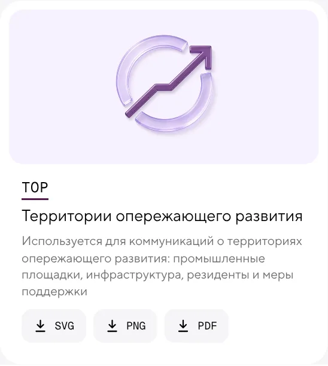
В файлах — линейный знак с цветным акцентом, в превью — стеклянный. Какой и где использовать, не сказано.
Белой версии нет, поэтому на цветном фоне и на фото знак не поставить. Стеклянного нет файлом.
Цвета знаков в файлах (ТОР #891D56) отличаются от цветов направлений (#53184F).
Предлагаю: три начертания, у каждого своя роль
Линейное
Есть. Документы, таблицы, навигация.
Белое
Нет. Цветные фоны, фото, метки.
Стекло 3D
Только картинкой. Обложки, видео, соцсети.
Белая версия здесь сделана программно — только чтобы показать идею. Заодно проверить, что у всех шести знаков одна сетка и толщина линии.
Предлагаю: приёмы раскатки
ТОР
Метка режима
Знак + аббревиатура в углу поста, слайда, бейджа или таблички резидента.
ТОР
СПВ
АЗРФ
Цвет-навигатор + суперграфика
Разделы презентации и отчёта в цвете режима, крупный знак уходит за край. Режим узнаётся до того, как прочитано слово.
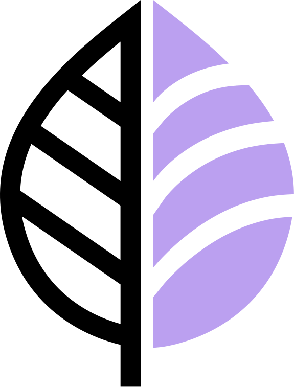
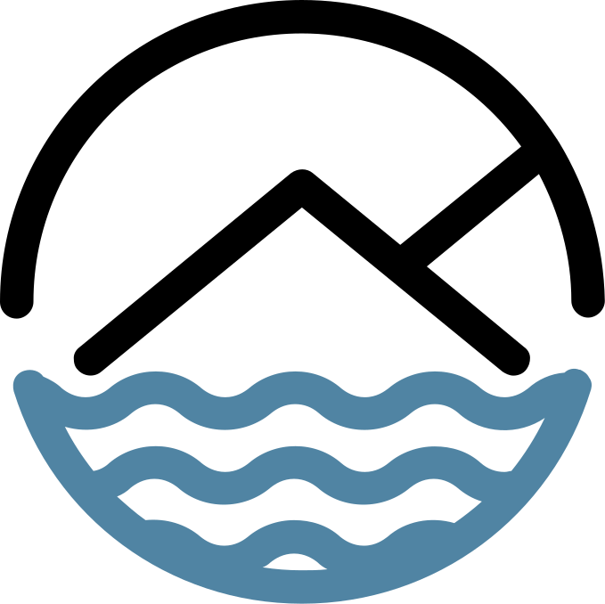
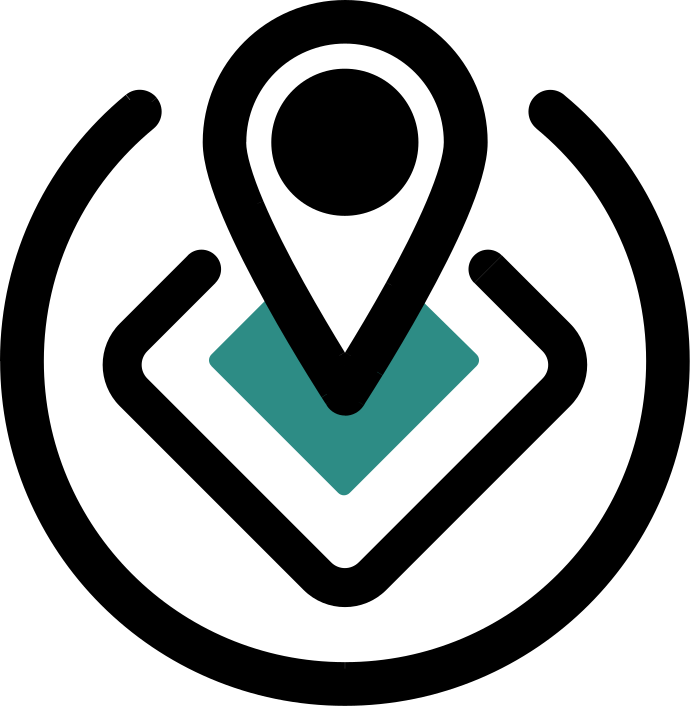
Паттерн
Все знаки на сетке — для пресс-волла, упаковки, подложек, фона сцены.
Связка с лепестками. На общих материалах КРДВ режимы — лепестки цветка в своих цветах (как на обложке). На материалах самого режима — его знак.
Анимация. Знак «дорисовывается» линией — общая заставка для видео и сторис всех режимов.
Цвета. Свести цвета в файлах знаков с утверждёнными цветами направлений.
Голос и семейство брендов
Б9
Блок «Как мы говорим» в «Позиционировании»
По вашему решению по И6 отдельного раздела не будет. Предлагаю короткий блок в конце «Позиционирования»: четыре принципа тона и три примера «так / не так». Портал и соцсети — как раз про тексты.
Объём: среднийПримеры ниже придуманы для иллюстрацииОбновлено по решению И6
Предлагаю: 4 принципа и примеры
КонкретноФакт и цифра вместо эпитета
ПростоБез канцелярита и пассивного залога
По-человеческиОбращаемся к человеку, а не к «субъектам»
УверенноБез пафоса и восклицательных знаков
Канцелярит
Осуществляется приём заявок на получение статуса резидента ТОР.
Подать заявку на статус резидента ТОР можно на сайте корпорации.
Пафос
Грандиозный прорыв в развитии региона!
В Находке открылся завод — 300 новых рабочих мест.
Безлично
Субъекты предпринимательской деятельности могут воспользоваться мерами поддержки.
Если у вас бизнес на Дальнем Востоке, вы можете получить льготы.
Б10
Кобрендинг: больше случаев — там же, в «Логотипе»
Подраздел остаётся в «Логотипе». Сейчас в нём только пример с министерством, а вопрос частый: партнёры, проекты («Государство для людей», Гектар, МА 2030). Предлагаю добавить примеры для каждого случая.
Объём: небольшойОбновлено по решению И6Примеры ГДЛ — из шаблона портала
Сейчас
«Логотип» → «Кобрендинг»: правила и два примера с министерством. Про партнёров и собственные проекты КРДВ — ничего.
Предлагаю
КРДВ + министерство министерство слева
КРДВ + партнёр равный вес, разделитель
Проекты с собственным стилем ГДЛ, Гектар, МА 2030, ИНТЦ
Ряд из 3+ логотипов выравнивание по высоте знака
Фотостиль
Б11
Фотостиль: от рубрик фотобанка — к принципам
Сейчас разделы называются как папки фотобанка: «Единый прогресс», «Выступления», «Природа», «Люди». Предлагаю построить раздел как инструкцию: что снимаем, как снимаем, как обрабатываем.
Объём: среднийФото те же, новые не нужны
Сейчас
Принципы съёмки одно правило
Единый прогресс непонятное название
Выступления только события
Природа
Люди
Нет обработки, места под логотип, портретов, этики, правил про ИИ.
Предлагаю
1. Принципы реальность, человек, масштаб, свет
2. Сюжеты проекты · люди · события · территории · культура
3. Как снимать ракурс, композиция, место под логотип
4. Обработка цвет и контраст
5. Так / не так парами фото
6. Этика и права согласие, ИИ, авторство
Б12
Фотостиль: правка формулировок
Точечная правка текстов — можно сделать сразу, даже без новой структуры.
Объём: небольшой
Сейчас
Предлагаю
Фотографии подтверждают действие бренда.
Фотография доказывает: то, о чём мы говорим, уже существует.
Нет хорошего фото? Используйте графические элементы фирменного стиля.
Нет хорошего фото? Используйте лепесток и сияние из раздела «Графика».
Б13
Обработка: чтобы фото с разных съёмок смотрелись одной серией
Фото приходят от «Атомфлота», РИА, региональных фотографов — у всех разная цветокоррекция. Нужны правила тона: естественный цвет, чистый белый, без тяжёлых фильтров.
Объём: небольшой
Предлагаю показывать так (одно фото — три обработки)
✓Естественный цвет, мягкий контраст, чистое небо✕Перенасыщено: «кислотное» небо, грязные тени✕Фильтр и виньетка: фото становится «рекламным»
Б14
Место для логотипа и текста в кадре
Для портала и соцсетей это главное правило, а в фотостиле его нет. Снимая или выбирая фото, оставляем спокойный угол под логотип и спокойную треть под заголовок. Модуль — тот же, что в соцсетях: логотип — 1/9 стороны, отступ — 1/18.
Объём: небольшойСвязано с порталом
Подходит
спокойная зона под заголовок
Небо в углу и однородный низ — логотип и текст читаются без плашек.
Не подходит
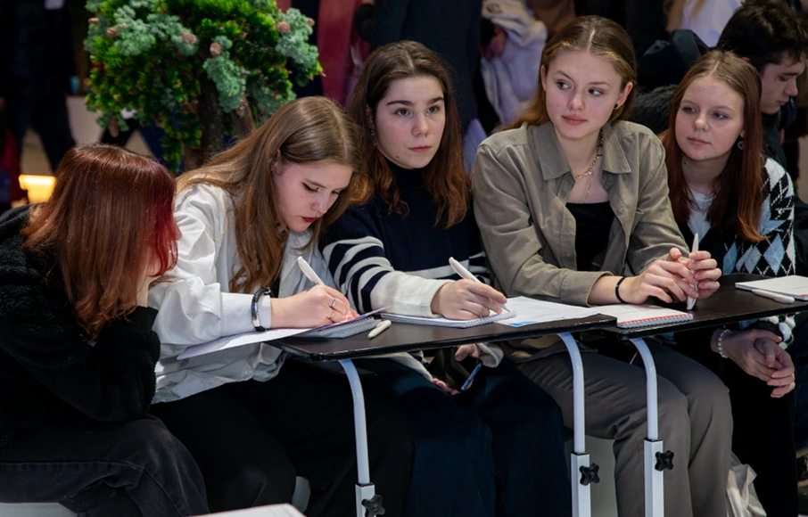
Логотип ложится на лица и мелкие детали. Нужно другое кадрирование или другое фото.
Б15
Этика, ИИ-изображения и авторство
Короткий блок, который защищает корпорацию от репутационных и юридических рисков. Сейчас его нет совсем. Формулировки нужно сверить с юристами.
Объём: небольшойСверить с юристами КРДВ
Предлагаю: правила
СогласиеУзнаваемые люди в рекламе — только с письменным согласием.
Коренные народыСнимаем с уважением, без экзотизации и «туристического» взгляда. В подписи — народ и место.
ИИ-изображенияВ новостях и о реальных объектах — нельзя. В иллюстрациях и фонах — можно.
АвторствоЕдиная подпись в углу кадра или под ним: «Фото: Имя Фамилия / Источник».
Как выглядит подпись
Фото: Алена Медведева
Вместо разных сносок под блоками («Источники фото…», «Автор фото…»).
Процесс
Б16
Как согласовать макет
В брендбуке несколько раз сказано «согласуйте с департаментом», но не сказано как. Короткий блок в «Контактах» снимет половину вопросов.
Объём: небольшойСроки и адрес нужно уточнить у вас
Предлагаю
Возьмите шаблонИз брендбука или с портала.
Проверьте самиЛоготип, охранное поле, цвета, текст.
Отправьте на согласованиеДепартамент визуальных коммуникаций — контакт уточнить.
Получите ответСрок — уточнить, например 2 рабочих дня.
Что дальше
Нажмите «Скопировать решения» внизу и вставьте текст в чат. Всё с отметкой «Да» внесу в рабочую версию — по порядку, начиная с небольших пунктов. По «Обсудить» — вернусь с вопросами.
Да: 0Нет: 0Обсудить: 0Без отметки: 0
Решения
Текст скопирован. Если вставить не получилось — выделите его здесь и скопируйте вручную.